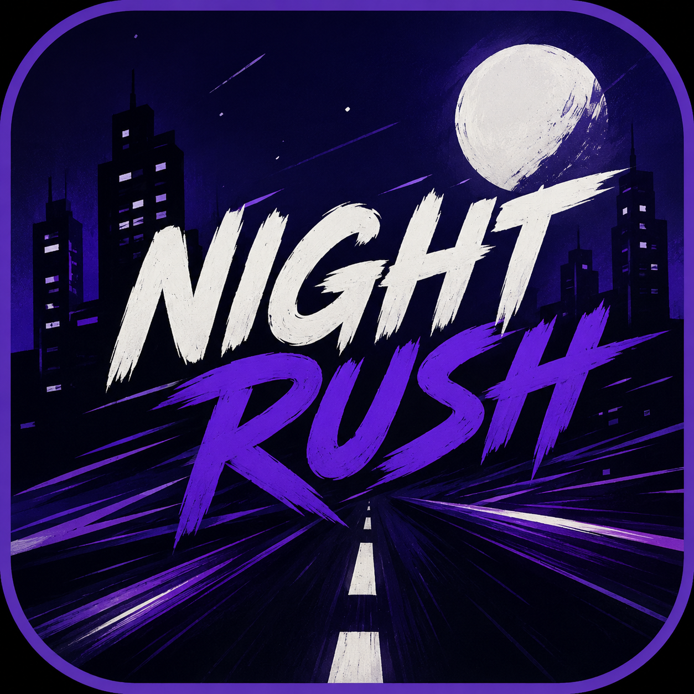

Informations sur le tournoi :
Téléchargements
Jouer en ligne

Répondez au sondage : Cliquez ici
Comment installer ?
Windows
Téléchargez le jeu depuis ce site puis ouvrez-le.
Mac
Téléchargez le jeu, ouvrez le fichier .dmg puis faites glisser l'application dans le dossier Applications.
Android
Téléchargez le jeu et ouvrez le fichier .apk. Si un avertissement apparaît, cliquez sur « Plus d'informations » puis sur « Installer quand même ».
iPhone
Téléchargez AltStore depuis https://altstore.io/download et installez AltStore Classic.
Ajoutez la source :
https://celtmen-cpu.github.io/Night-Rush/source.json
Installez AltServer sur PC/Mac, connectez-vous avec votre identifiant Apple puis installez Night Rush.
Activez le mode développeur si demandé. Un renouvellement est nécessaire tous les 7 jours.
Créé avec ❤️ en 🇫🇷.